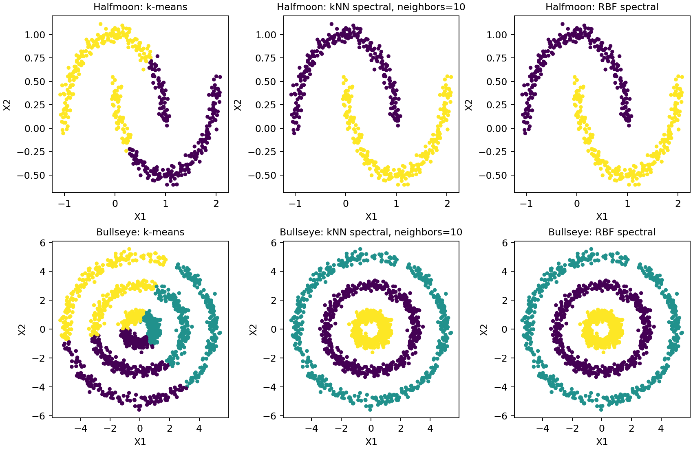

Question
When does a graph representation recover nonlinear cluster geometry that k-means misses?
Findings
At the prespecified 10-neighbor setting, normalized spectral clustering achieved ARI 1.0 on both supplied datasets, compared with 0.253 and 0.004 for k-means. The neighbor grid is reported in full, including disconnected-graph diagnostics. These are descriptive benchmark scores, not held-out performance.

Methods and revision
Separated neighborhood size from the number of clusters, used the appropriate number of normalized eigenvectors, and added connectivity and isolated-node checks. The selected examples use 2 and 3 clusters rather than interpreting neighbor counts as cluster counts.
Limits
The number of clusters is known for these teaching examples. ARI uses the provided reference labels for evaluation. Affinity choices matter, and perfect recovery of these examples is not evidence of broad generalization. Dense eigendecomposition is not designed for large datasets.
Run the analysis
python analysis.py --halfmoon data/halfmoon.csv --bullseye data/bullseye.csv --output resultsExact results use the two supplied teaching CSVs, not redistributed here. Each requires X1, X2, Cluster. The labels are used only to describe recovery, not to fit the clustering models. Other synthetic inputs can be supplied but will produce different scores.